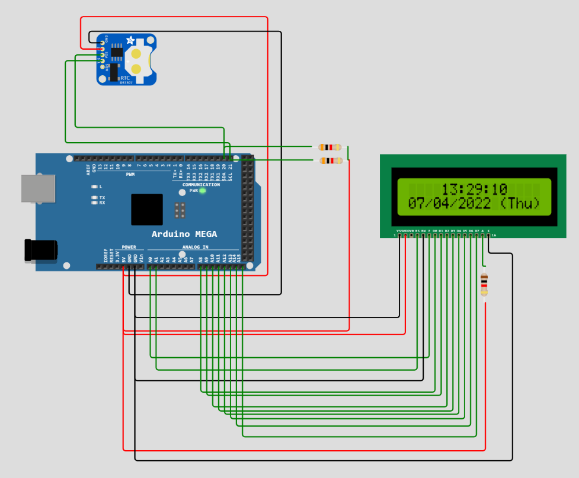

Real Time Clock with an LCD

Overview
In this project we are going to retrieve the data of time and calender from the RTC and display it on the lcd, it updates data on LCD for every second.
Components
Arduino Mega(Atmega2560)
Ds1307 RTC
Three 1K Resistors
16x2 LCD
Jumper Wires
I2C Working

Transmission from master to slave
I2C starts with a START condition followed by a 7 or 10 bit unique address of the slave device plus one 1-bit of write bit, then master will get acknowledgement bit from the slave,then send the address of the location where you want to write the data, then master will recieve the acknowledgement from slave, then send the data, and master will recieve the acknowlegdement, as I2C auto-increments the address there is no need to send the address everytime, then to end communication, use a STOP condition.
Receiving from Slave to Master
I2C starts with a START condition followed by a 7 or 10 bit unique address of the slave device plus 1-bit of write, then master will get acknowledgement bit from the slave,then send the address of the register where it wants to read from, then again use a start condition,followed by address of slave plus 1-bit of read,master will send an acknowlegement,then slave will send the data, master will send the acknowledgement,there is no need for the master to send acknowlegement for the last data, then end with a STOP condition.
Project working
Ds1307 RTC uses I2C interface to communicate with the microcontroller. Connect VCC and GND to their respective power and ground pins of arduino, connect SCL and SDA with a 1K ohm pull-up resistors.
when you power up the RTC for the first time, you need to set the data in the registers of the RTC.
Registers of RTC

Setting the Register values for Time and Date
Start the communication with START condition and send the 0xD0 as the slave address and check the I2C status registers of atmega2560 for the status of the communication, send the 0x00 which is the Address of seconds register and send the data of seconds,minutes,hours,day,date,month,year and end the communication with a STOP condition.
For DAY DATA
1- SUNDAY , 2-MONDAY , 3-TUESDAY ......................
Getting the Register values of Time and Date
Start the communication with START condition and send the 0xD0 as the slave address, recieve an ACK from slave, and send 0x00 address to the slave.Again repeat the START conditon but slave address as 0xD1 (1 refers to READ bit),master sends the ACK, then slave sends the data in the "seconds" address location i.e 0x00 , master sends the acknowlegement,auto -increment moves the address location to 0x01 which is "Minutes" address location, master will send the acknowledgement, repeat the process till 0x06 i.e year address location, there is no need to send ACK from master for last data, end the communication with STOP condition.
Setting the time and data can be done once, when RTC is powered on for the first time, there is no need to call the set function everytime.
Using the Timers we can get the data from RTC for every one second and display it on the LCD display, inside the ISR of a timer we call the function of getting data from RTC and display it on the LCD